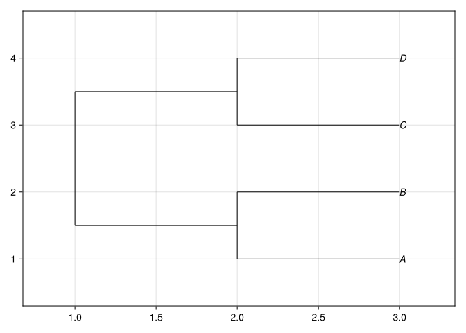
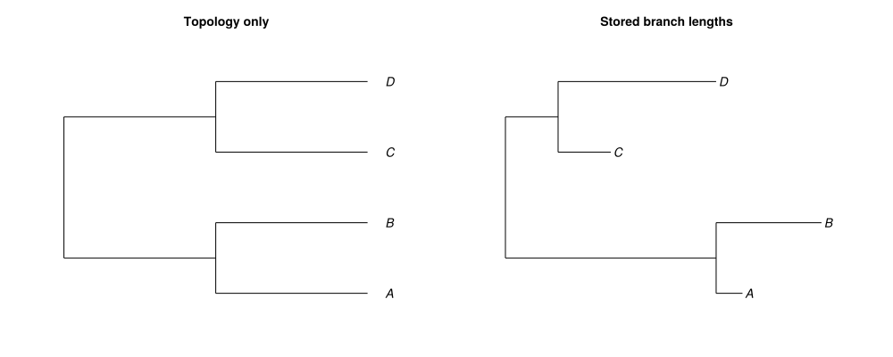
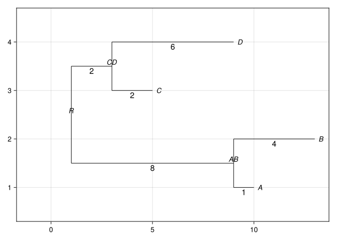
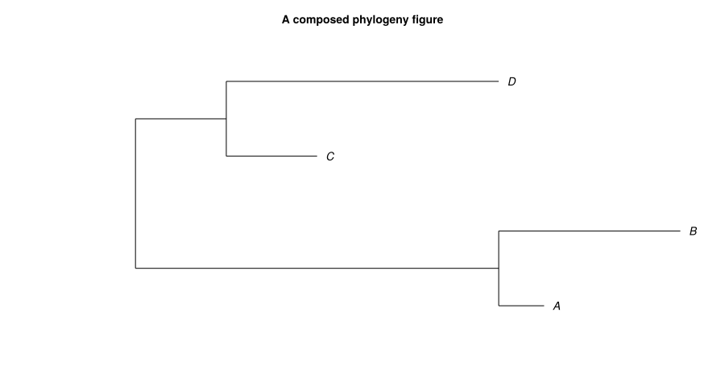
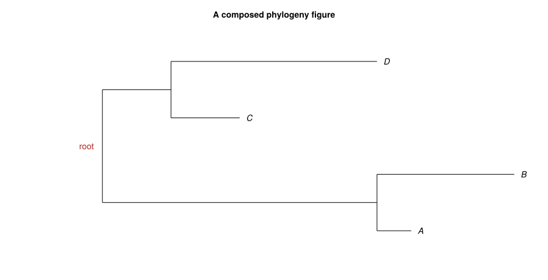

phylogeny = newick"((A:1,B:4)AB:8,(C:2,D:6)CD:2)R:2;"LineageNetwork(7 nodes, 6 edges, 4 tips, 0 hybrid nodes, rooted)Jeet Sukumaran
This tutorial develops a phylogeny visualization in the same order that we would work through it at the Julia REPL:
phylogeny object
-> tree plot
-> plot attributes
-> Makie composition
-> coordinate-based annotationsThe phylogeny representations tutorial explains how to parse strings and read files. The Newick primer describes the format’s punctuation and grammar.
By the end of this tutorial, you should be able to:
plot;Axis with plot!; andGLMakie and PhyloMakie.jl need to be installed in the active environment. If this has not already been done, run:
Load the packages with:
The interactive REPL workflow uses GLMakie. This rendered page uses CairoMakie to produce static SVG figures.
Use the newick string macro when the source is 1 literal Newick expression:
LineageNetwork(7 nodes, 6 edges, 4 tips, 0 hybrid nodes, rooted)The variable phylogeny contains a phylogeny object rather than Newick text. The representations tutorial covers the other constructors and readers.
plot(phylogeny) creates a new figure, a new axis, and a PhyloPlot:

The returned FigureAxisPlot provides all 3 objects:
Plot{phyloplot, Tuple{LineageNetwork{Nothing, Nothing, Nothing}}}Use .figure to display or save the figure, .axis to add Makie content, and .plot to query or update the live phylogeny plot.
PhyloMakie also provides phyloplot(phylogeny) as a package-specific alias for plot(phylogeny).
The default useedgelength = false draws the topology without scaling branches by their stored lengths. Set useedgelength = true when horizontal distance should represent branch length.
layout_figure = Figure(size = (1000, 400))
for (column, use_lengths, title) in (
(1, false, "Topology only"),
(2, true, "Stored branch lengths"),
)
layout_axis = Axis(layout_figure[1, column]; title = title)
hidedecorations!(layout_axis)
hidespines!(layout_axis)
plot!(
layout_axis,
phylogeny;
useedgelength = use_lengths,
tipoffset = 0.12,
)
end
layout_figure
The topology is identical in both panels. Only the horizontal placement of the nodes changes.
The phylogeny stores labels on its internal nodes and lengths on its branches. Plot attributes control whether the figure displays that information.

High-value attributes include:
| Attribute | Effect |
|---|---|
useedgelength |
Scale the horizontal layout with stored branch lengths. |
showtiplabel |
Display terminal-node labels. |
shownodelabel |
Display internal-node labels. |
showedgelength |
Annotate branches with their stored lengths. |
tipoffset |
Separate tip labels from terminal nodes. |
tipfontsize, nodefontsize, edgefontsize |
Set text sizes. |
edgecolor, edgewidth |
Set branch appearance. |
xlim, ylim |
Reserve or restrict axis data space. |
Change 1 attribute at a time when diagnosing its effect.
Use plot! when the figure and axis already exist:
composed_figure = Figure(size = (900, 460))
composed_axis = Axis(
composed_figure[1, 1];
title = "A composed phylogeny figure",
)
hidedecorations!(composed_axis)
hidespines!(composed_axis)
composed_tree_plot = plot!(
composed_axis,
phylogeny;
useedgelength = true,
tipoffset = 0.2,
xlim = (-1, 13),
)plot! returns the live PhyloPlot object. PhyloMakie’s phyloplot!(axis, phylogeny) is an alias for the same operation.

The figure and axis remain available for additional panels, labels, legends, and annotations.
node_positions returns the coordinates calculated for the live plot:
| Row | name | x | y |
|---|---|---|---|
| String | Float64 | Float64 | |
| 1 | A | 10.0 | 1.0 |
| 2 | B | 13.0 | 2.0 |
| 3 | C | 5.0 | 3.0 |
| 4 | D | 9.0 | 4.0 |
| Row | name | x | y |
|---|---|---|---|
| String | Float64 | Float64 | |
| 1 | A | 10.0 | 1.0 |
| 2 | B | 13.0 | 2.0 |
| 3 | C | 5.0 | 3.0 |
| 4 | D | 9.0 | 4.0 |
Query these coordinates instead of recreating the tree layout independently. For example, locate the root by its stored label and add a Makie annotation:

The annotation uses coordinates from the rendered PhyloPlot, so it remains aligned with the displayed layout.
| Function | Return value | Use |
|---|---|---|
plot(phylogeny) |
Makie.FigureAxisPlot |
Create a figure, axis, and phylogeny plot. |
plot!(axis, phylogeny) |
PhyloPlot |
Draw into an existing axis. |
phyloplot(phylogeny) |
Makie.FigureAxisPlot |
Use PhyloMakie’s alias for plot. |
phyloplot!(axis, phylogeny) |
PhyloPlot |
Use PhyloMakie’s alias for plot!. |
Create a composed figure for this phylogeny:
((A:1,B:1)AB:2,(C:1,D:1)CD:2)root;Required steps:
Figure and Axis.plot! and useedgelength = true."root" at the calculated root position.| Symptom | Likely cause | Direct check |
|---|---|---|
| Branches do not scale by their lengths. | useedgelength is false. |
Set useedgelength = true. |
| Internal labels are absent. | shownodelabel is false. |
Set shownodelabel = true. |
| A graphic misses its intended node. | Its coordinates were guessed. | Query node_positions(plot_handle). |
| New content replaces the existing figure. | The non-mutating entry point was used. | Call plot!(axis, phylogeny). |
| Labels or annotations are clipped. | The data limits reserve too little space. | Set suitable xlim or ylim values. |
The basic composition in this tutorial uses ordinary Makie annotations. Continue with adding supplied images to phylogenies or resolving PhyloPic images for phylogenies when the added content is an image.